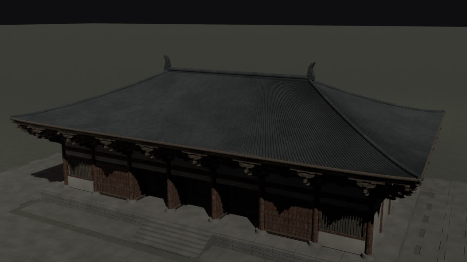

原次 StepFun × Mac Blender · Spark 三维重建
第 1 / 145 步
测量原殿
读取佛光寺东大殿，确定柱网与屋顶尺寸。
斗拱内部装配 · 1 次原始工具调用
坐斗落位
拖动旋转 · 滚轮缩放
AGENT LOOP观察
Harness 回复
从零到一 · 佛光寺东大殿 · 第 4 次尝试
第 1 / 145 步
读取佛光寺东大殿，确定柱网与屋顶尺寸。
坐斗落位

Agent 自主测量、建造；Harness 拦下异常参数并反馈承重、重力与相似度检查，模型据此修到验收。